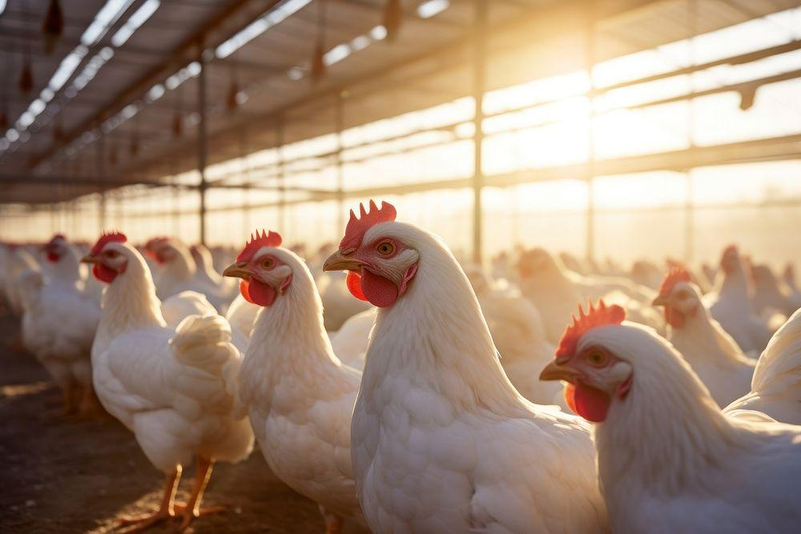
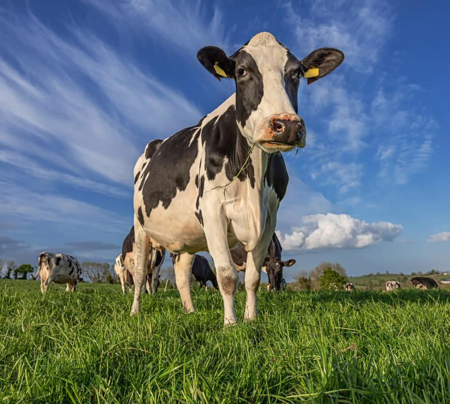
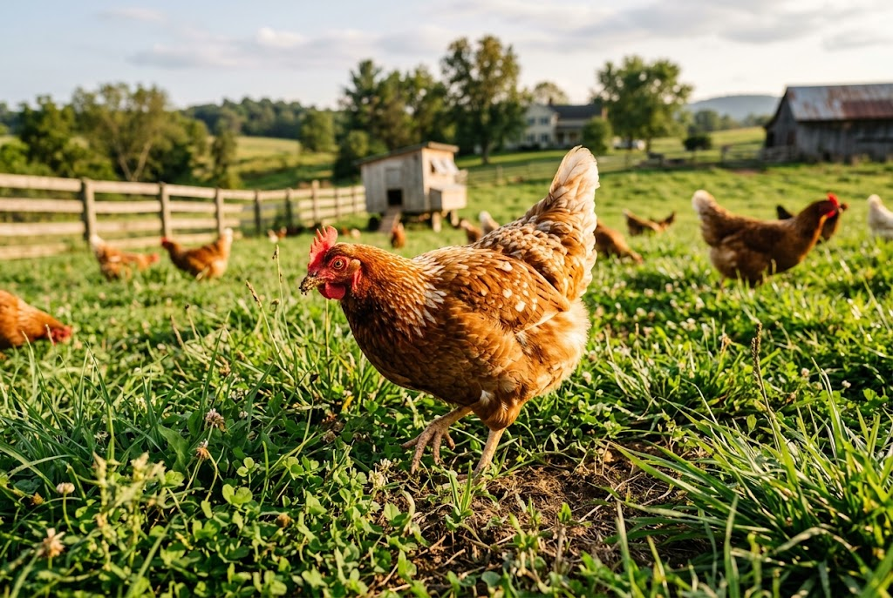
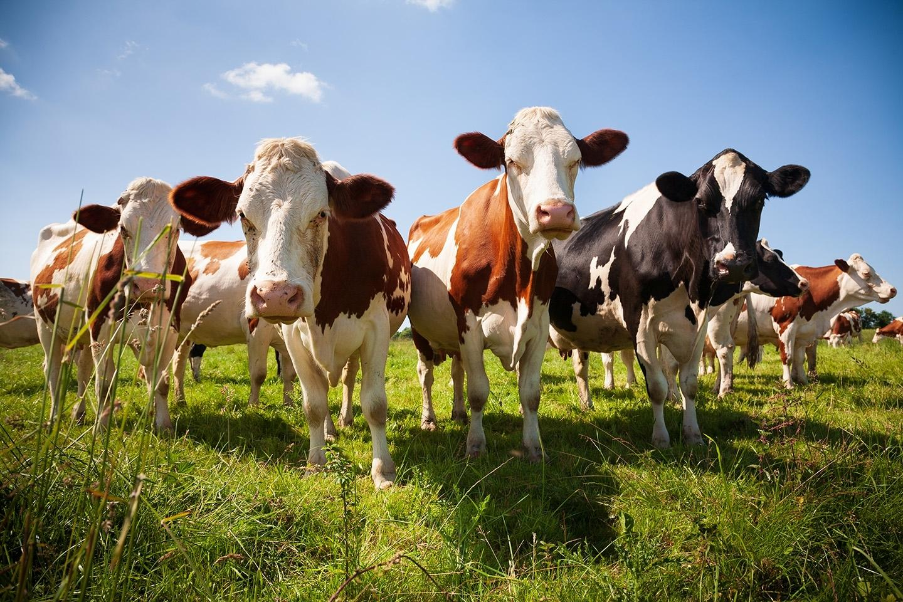

Poultry
Explore our poultry products and learn more about our poultry production and management.
Explore Poultry →FAMILY FARM & VETERINARY SERVICES
Providing quality poultry and dairy products together with professional veterinary services specializing in poultry management and cattle medicine.

ABOUT US

Our family farm combines poultry and dairy production with professional veterinary knowledge to provide quality products and responsible animal care.
With a focus on poultry management and cattle medicine, we work to maintain healthy animals while producing quality farm products for our customers.
Learn More About Us →OUR PRODUCTS
We provide quality poultry and dairy products produced with care and attention to animal health.

Explore our poultry products and learn more about our poultry production and management.
Explore Poultry →
Discover our dairy products produced with careful attention to animal health and quality.
Explore Dairy →VETERINARY SERVICES
Supporting healthier livestock through professional veterinary care and effective farm management.
Poultry health management, flock care, disease prevention, and farm management practices.
Veterinary care focused on cattle health, disease prevention, and livestock well-being.
Professional guidance on animal health, preventive care, and responsible livestock management.
FROM OUR FARM DIARY
Explore our farming experiences, animal health insights, and practical livestock management information.

Poultry
An introduction to responsible poultry management and maintaining a healthy flock.
Read More →
Cattle Health
Learn about good livestock management, preventive care, and cattle well-being.
Read More →
Dairy Farming
Discover the importance of animal welfare, hygiene, and quality in dairy production.
Read More →GET IN TOUCH
Interested in our poultry and dairy products, or looking for professional veterinary services? We'd be happy to hear from you.
Contact Us